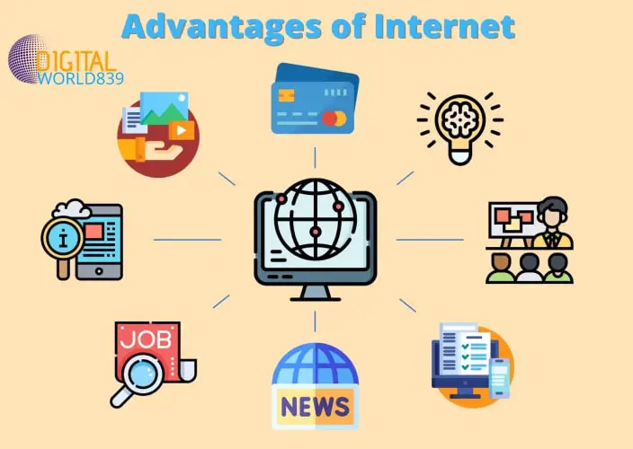

Before Knowing about HTML we should focus on what is Internet.
You can get clear idea about internet by clicking about Internet.
About Internet
is the global system of interconnected computer networks that uses the
Internet protocol suite (TCP/IP)[b] to communicate between networks
and devices. It is a network of networks that comprises private,
public, academic, business, and government networks of local to global
scope, linked by electronic, wireless, and optical networking
technologies. The Internet carries a vast range of information
services and resources, such as the interlinked hypertext documents
and applications of the World Wide Web (WWW), electronic mail,
discussion groups, internet telephony, streaming media and file
sharing.
A video about what is Internet
The Internet is a global network of interconnected computers and
devices that allows people to communicate, share information, and
access services from anywhere in the world. It enables activities such
as browsing websites, sending emails, streaming videos, and using
social media. By connecting millions of networks together, the
Internet makes it possible for users to quickly exchange data and
access a vast amount of knowledge and resources.
Three main Services of the Internet
1.Email – Allows users to send and receive electronic messages and
files.
2.World Wide Web (WWW) – Provides access to websites, information,
images, and online resources through web browsers.
3.File Transfer (FTP) – Enables users to upload and download files
between computers over the Internet.
Internet services are the various facilities and applications that allow
users to communicate, access information, and
perform tasks online. Common Internet services include the World Wide Web
(WWW) for browsing websites, email for sending messages, file
transfer services (FTP) for sharing files, video conferencing for online
meetings, cloud storage for saving data online, and social
media platforms for connecting with others. These services make
communication, learning, business, and entertainment more convenient in
everyday life.
How the Internet is used in daily life?

1.Education
The internet is a vital tool for students of all ages, allowing them to
learn at their own pace, access global learning materials, and develop
essential digital literacy. It is equally critical for teachers to
supplement traditional lessons and working professionals seeking
flexible upskilling. To see how learners of all backgrounds benefit from
connectivity, explore platforms like Coursera or edX.
2.Entertainment
For modern entertainment, the internet relies on a massive, global
network of content creators and social media influencers. These
independent voices, alongside massive streaming platforms, have
transformed passive viewers into active, engaged participants who now
dictate the culture of online entertainment.
2.E-payments
To securely transfer funds online, the digital economy requires four
primary entities: the consumer making the purchase, the merchant
receiving funds, and a secure technical pipeline connecting them. This
pipeline relies on payment processors, gateways, and financial
institutions (like issuing and acquiring banks) to authorize, process,
and settle the transactions.
Below is a video on How the Internet is used in daily life
Role of Web Browsers.
What is DNS and why it is important
A DNS (Domain Name System) server is a server that translates
human-readable domain names, such as www.google.com, into numerical IP
addresses that computers use to communicate over the internet. When a
user enters a website address into a web browser, the DNS server
processes the request and provides the corresponding IP address,
allowing the browser to connect to the correct website. DNS servers are
important because they make the internet more user-friendly by
eliminating the need to remember complex IP addresses. They also enable
efficient internet navigation, support the scalability of websites and
online services, and improve performance and reliability by helping
users reach the correct servers quickly and by providing backup
resolution options when needed.
You can plug in to the our web page about Html tags
from navigation bar Deployed site link


.jpg)